For communication, a figure needs to make sense to someone who does not already know the data or the plotting code.
That reader might encounter it without the surrounding text or a spoken explanation.
These are guidelines, not rules that work independently of the audience and context.
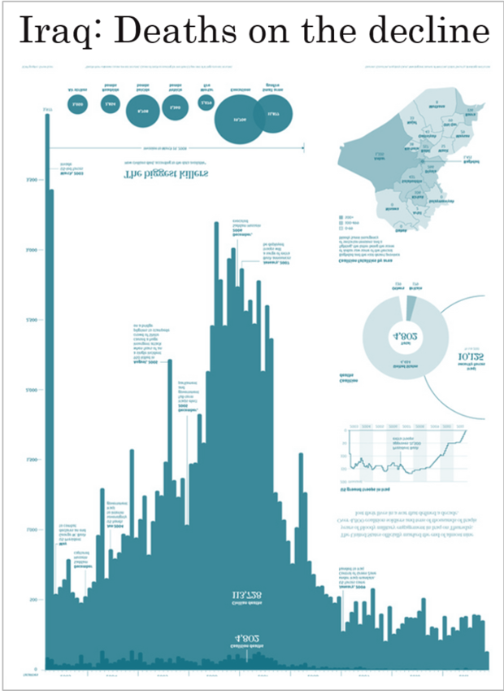
Both these messages are true and the complete data story includes both
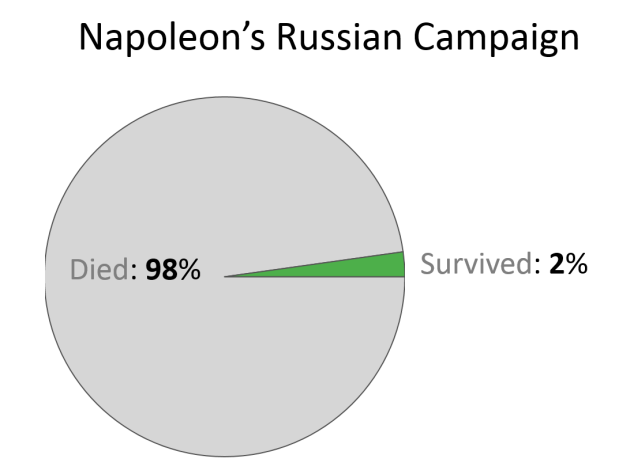
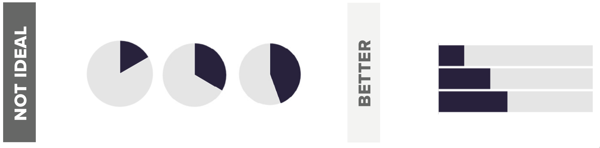
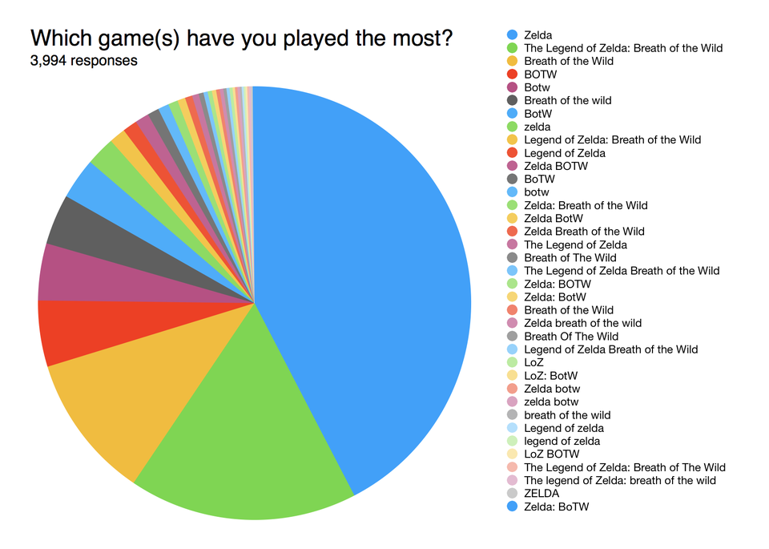
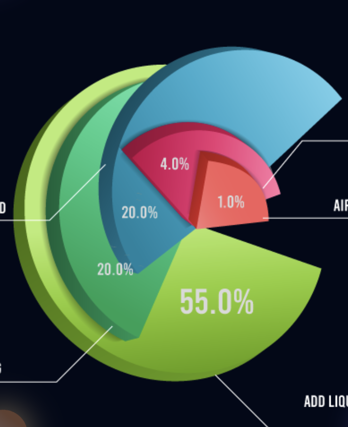
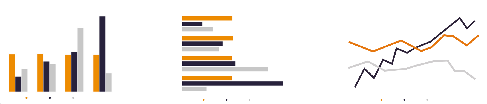
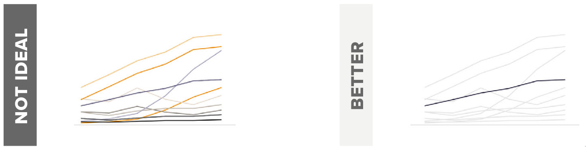
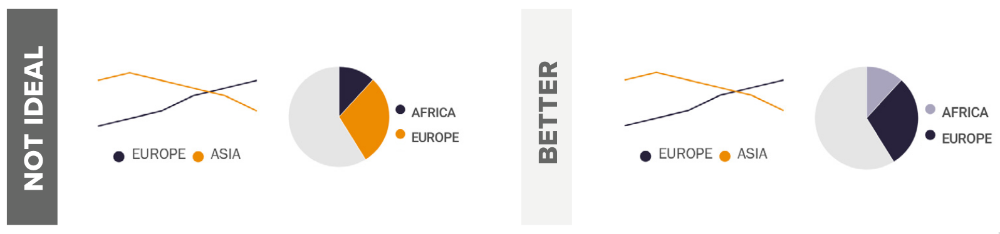
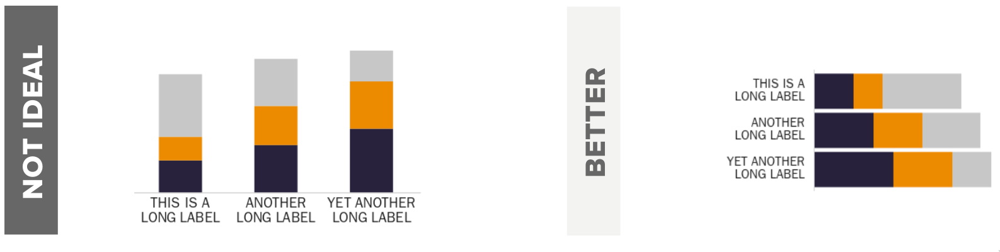
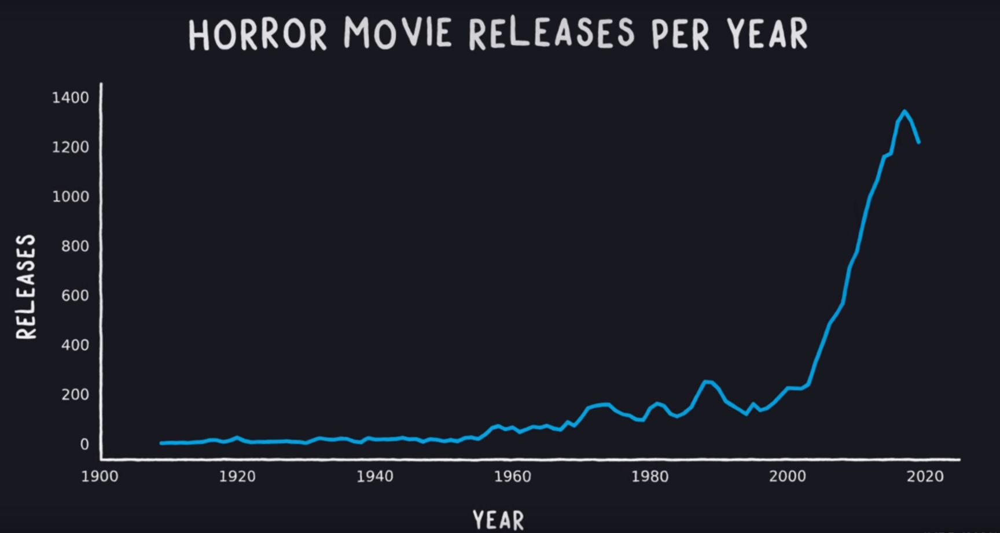
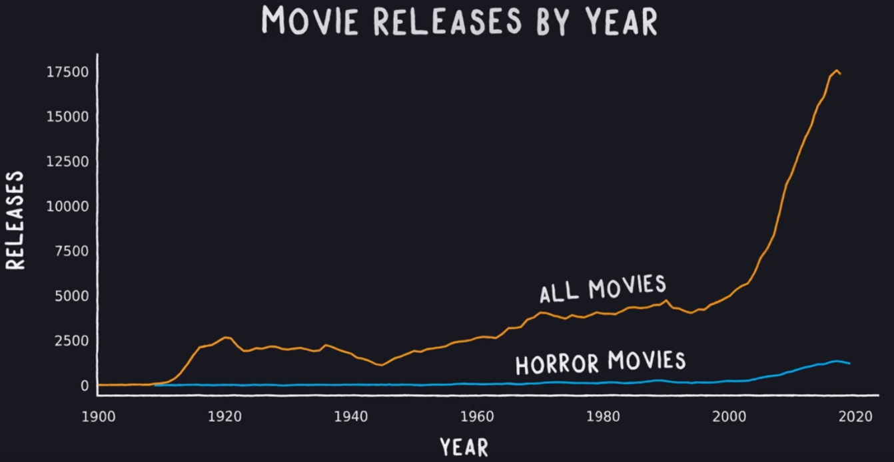
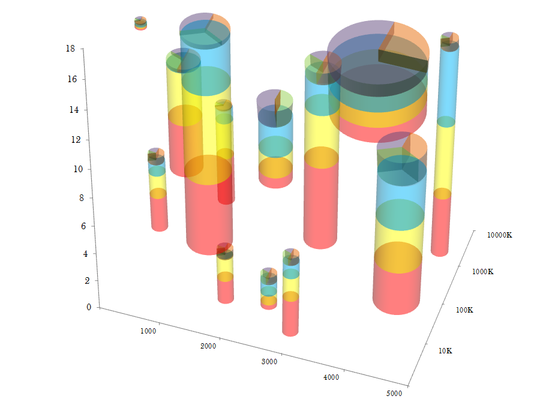
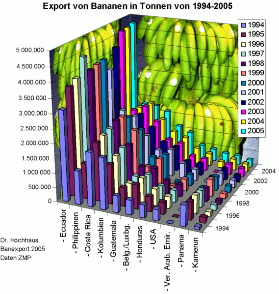